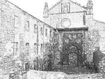

对建筑进行卡通着色
本简短教程介绍如何使用卡通着色器创建老旧的草图样式“插图”，如上图所示。介绍了如何将“基础色调映射”(Base Tonemap)和“边缘检测”(Edge Detection)与使用噪波着色器的凹凸贴图结合使用以创建填充效果。非常感谢 Javier Garcia-Lajara Herrero 提供其修道院模型。
- 首先，将卡通着色器指定给几何体。
- 将“过滤器类型”(Filter Type)更改为“轮廓”(Contour)（Arnold 渲染设置）。否则，您将无法在渲染中看到卡通边着色。
- 因为我们在渲染中不需要任何镜面反射着色，所以将 specular_weight 减小到 0。
- 创建一个 skydome_light 并渲染场景。效果应类似下图。
边缘检测(Edge Detection)
- 将“角度阈值”(Angle Threshold)减小到 20 左右（“卡通 -> 边缘检测”(Toon -> Edge Detection)）。这将在几何体周围提供更详细的边。
- 边显得又粗又黑。通过将边的“宽度比例”(Width Scale)减小到 0.4 左右，可以修复此问题。
基础色调映射(Base Tonemap)
- 基础着色看起来太暗，无法获取所需的演示效果。通过使用渐变来确定场景中照明对基础着色的影响，我们可以调整效果。将黑白渐变连接到“基础色调映射”(Base Tonemap)并增加渐变中的白色分量，直到效果如下图所示。
| 未使用基础色调映射 | 黑白渐变 > 基础色调映射(B&W Ramp > Base Tonemap) |
填充（噪波着色器）
接下来，我们将填充样式添加到卡通边。为此，我们可以对曲面设置凹凸效果（或进行置换）。
- 将 Arnold 噪波着色器连接到卡通着色器中的“几何体 -> 法线(凹凸贴图)”(Geometry -> Normal (bump mapping)。
- 将“倍频程”(Octaves)的数量增加到 8。将 Y 轴的“比例”(Scale)减小到 0.01。这将使噪波在垂直方向上拉伸并呈现填充效果。
| 噪波比例：1 | 噪波比例 Y：0.01 |
- 尝试不同的噪波着色器/设置以获取不同的填充/点画效果。
| Cell1 | 束状 |
|  | |
| 翻滚 | 柏林 |
各种噪波着色器 -> 凹凸贴图
最终渲染
- 将 HDR 贴图或 physical_sky 连接到 skydome_light。
- 还可以将浅黄色基础*和 *emission_color 连接到卡通着色器，以呈现陈旧的纸张效果。
- 尝试在几何体后面使用多边形平面以向天空添加类似的着色效果（如本例中的用法）。

最终的着色网络